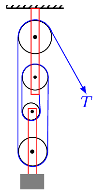
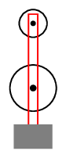
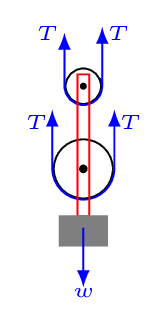
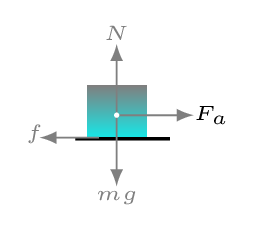
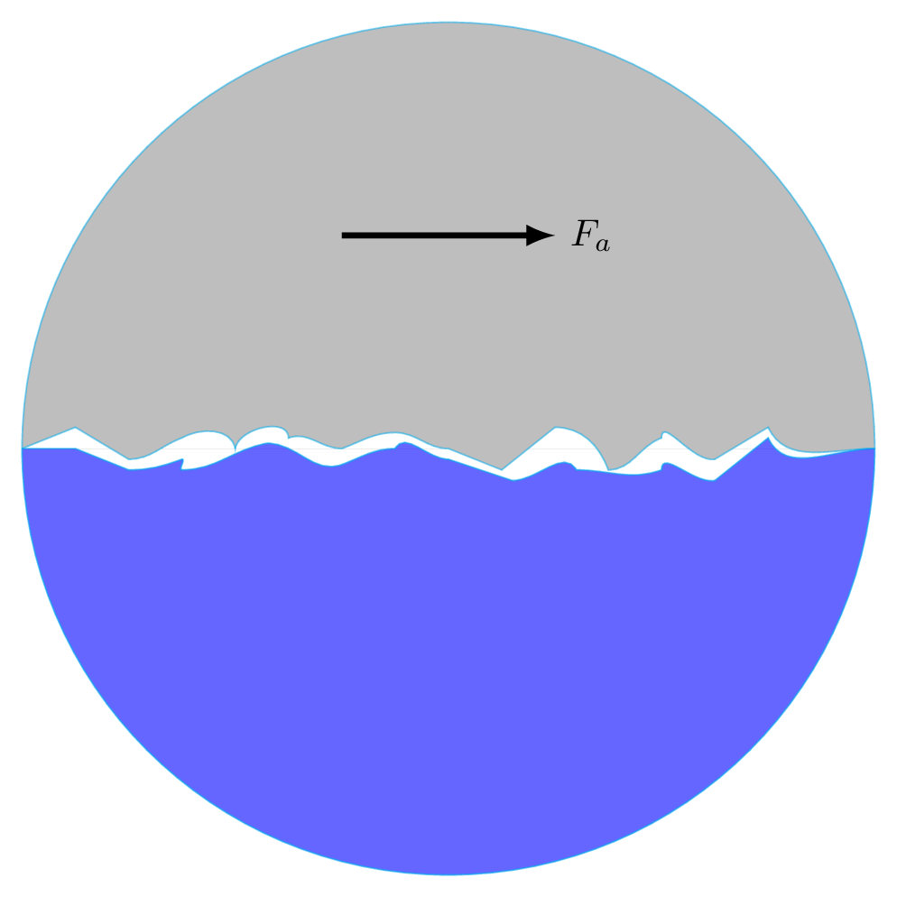
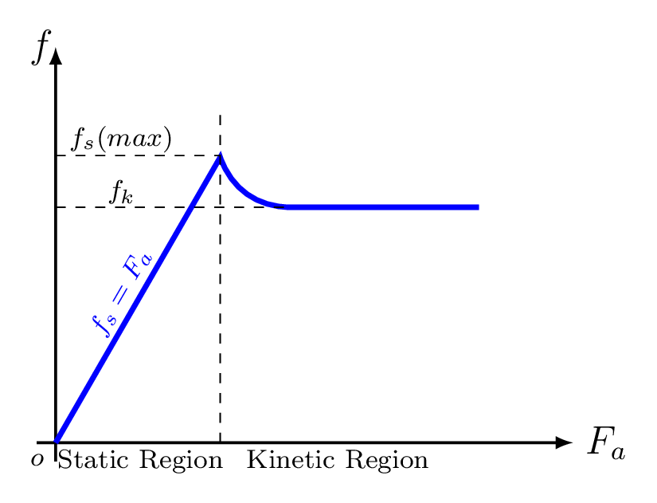
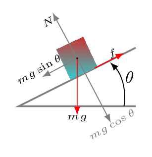

There are four fundamental forces in nature: gravitational, electromagnetic, weak nuclear, and strong nuclear. Gravitational force is the weakest known forces in nature. It is a long range force. It exists due to mass of the objects. Electromagnetic force is also a long range force and is stronger than gravitational force. It exists due to charges of the objects. Strong nuclear force is the strongest known force but it is the shortest range force which only exists inside the nucleus. Its main job is to hold subatomic particles of the nucleus together. (i.e. binding the positively charged protons and neutral neutrons inside the nucleus). Weak nuclear force is weaker than strong nuclear force and electromagnetic force. It is also a very short range force and accounts for the radioactivity in unstable nuclei.
For a large-scale, electrically neutral objects such as those encountered in this course, the only force that acts at a distance is the gravitational force. All other forces we encounter will be contact forces (mechanical forces) that occur at the boundary of an object where that object physically touches some other object, e.g. tension, friction, normal, and other applied forces [Subsection 4.1.3]. Actually, mechanical force, or chemical force, or any other kinds of force are all electromagnetic forces. In our daily life almost all force we experienced are electromagnetic force except the force of gravity. Strong nuclear forces are very short range and we do not feel them dispite the fact that it is more powerful than the electromagnetic force. Weak forces are also short range and even weaker than electromagnetic force.
To identify forces acting on a body, first identify the boundary of that object and include the weight of everything inside that boundary. Then identify everything that touches the boundary from outside the object and include an appropriate force for each point of contact.
Note that massless, frictionless pulleys as shown below adjust themselves so that the tension is the same on both sides of the pulley. Figure 4.1.3.(a) is a system of pulleys, Figure 4.1.3.(b) is an isolated system, and Figure 4.1.3.(c) a free-body diagram.
(a)
(b)
(c)
Figure4.1.3.
Subsection4.1.2Newton’s Laws of Motion
Newton’s first law provides the definition of force which states that every object in a state of rest remains at rest or in a state of uniform motion tends to remain in that motion along the same direction, unless an external force is applied onto it. Force is not required to continue the motion of anything which is already in motion.
The first law is also called a law of inertia. Inertia is an ability of an object to resist changes in its motion. In other words, we can say the laziness of an object to change its mechanical state is called an inertia. Mass is related to inertia, the bigger the mass the more difficult it is to change its state of rest or motion.
Newton’s second law provides the measurement of force which states that the rate of change of momentum is directly proportional to the applied force and its direction is along that change.
Newton’s third law provides the property of force which states that for every action there is an equal and opposite reaction. Meaning, force always comes in pair. If an object \(A\) applies the action force on object \(B\) then the object \(B\) applies the reaction force on the object \(A\text{.}\) These pair of forces always act on two different objects. For example, if action force is acting on object B then reaction force must be acting on the object A.
If you stand on a weighing scale, your weight push the scale down with a force equal to your weight, then the scale applies the reaction force on you equal to your weight as a normal force. Remember that even if weight and normal force are equal they are not always equal and they are completely different forces. You get a normal force only when you are in contact with the other surface but you have the weight even if you are above the surface (while jumping) of anything. Suppose you are pushing the book against a wall, so that it does not fall. In that case, the book pushes against the wall and the wall pushes back. This interaction is the normal force and acts on both the book and the wall. None of these forces were equal to the gravitational force or weight of the book.
Subsection4.1.3Friction
Friction is a resistive force that opposes or tends to oppose relative motion between two objects. It is a force that exists between the surfaces of contact of the two objects [Figure 4.1.4.(a)]. If two systems are in contact and stationary relative to each other, then the friction between them is called static friction. This force arises from mechanical interlocking at the microscopic level plus the electrostatic molecular forces that hold the surfaces themselves together. If two systems are in contact and moving relative to one another, then the friction between them is called kinetic friction. This force arises from forming and breaking of microscopic adhesive bonds between atoms on the surfaces plus some mechanical linkage between the small irregularities on the surfaces as shown in Figure 4.1.4.(b). Experimentally it is found that frictional force is proportional to normal force, i.e., \(f \propto N \) as shown in Figure 4.1.4.(c).
\begin{equation}
\text{or,} \quad f = \mu N\tag{4.1.2}
\end{equation}
(a)
(b)
(c)
Figure4.1.4.
Where proportionality constant \(\mu\) is called coefficient of friction. It defines the nature of roughness of the surfaces being in contact. It is a dimensional less quantity. The coefficient of friction is a property of materials and does not change with the angle. For static friction, \(f_{s} \leq \mu_{s}\) N. The symbol \(\leq\) implies that static friction can have a maximum value of \(\mu_{s} N\text{.}\) Static friction is a responsive force that increases to be equal and opposite to whatever force is being exerted, up to its maximum limit. Once the applied force exceeds \(f_{s} (max) \text{,}\) the object moves. Thus, \(f_{s}(max) = \mu_{s} N\text{.}\) For kinetic friction, \(f_{k} =\mu_{k} N\text{.}\) Remember the direction of friction is always opposite to the direction of motion or applied force, not in the direction of normal. Hence the above equations has no vector form.
Friction decreases with increase in smoothness of the surfaces of contact as \(\mu\) decreases, but if the surfaces are ultra smooth then friction increases because of inter molecular forces starts to act between the two surfaces as they come very close to each other, due to which it becomes harder to make them slide on each other. Friction is a complex force, and its behavior is still not completely understood. On molecular level friction has no existence. In microscopic level most surfaces look very rough as shown in Figure 4.1.4.(b). Thus, when an object is pushed to move it must raise the object until it can skip the tips of the surface hitting, breaking off the points, or both. A considerable force can be resisted by friction with no apparent motion. Part of the friction is due to adhesive forces between he surface molecules of the two objects, which explains the dependence of friction on the nature of the substances. For example, rubber-soled shoes slip less than those with leather soles. Adhesion varies with substances in contact. Once an object is moving, there are fewer points of contact so less force is required to keep the object moving. At small but nonzero speeds, friction is nearly independent of speed.

Figure4.1.5.
When an object is placed on the surface of an inclined plane and the angle of inclination is being increased slowly then at a particular angle the object just begins to slide, this angle is known an angle of repose, \(\phi\). At the angle of repose static frictional force is balanced by one of the components of weight \((mg\sin\theta)\) of the object (see in section statics).
Force of Gravity: This force is acting on any object due to attraction of earth. Near the surface of the earth force of gravity is given by its weight, i.e., \(F_{g}=w=mg\text{.}\) Where \(g\) is the acceleration due to gravity and the direction force is acting along the center of the earth. Normal: This is a force of reaction from the surface where the object is placed. It is always perpendicular to the surface of contact. Tension: This force is acting between two objects on opposite ends of the string, in the directions to taut string at the points of contact. This force stretches the string along fixed support. It is a pulling force. Spring force: A spring is a special medium that has ability to restore its shape, if deformed. All materials have elastic property which helps them to restore their shape, if an applied deforming force has been released. From Hook’s law a material (spring) exerts a restoring force that is proportional to a deforming force in opposite direction in which it is stretched or compressed. In mathematical form,
The proportionality constant \(k\) is a measure of the spring’s stiffness, also called an elastic constant. The line of action of this force is parallel to the spring axis, and acts along the opposite direction of the displacement vector. The displacement must be measured from the relaxed (equilibrium) position; \(x = 0\) when the spring is relaxed.
Subsection4.1.4Statics
When more than one force acts on a body in such a way that their net effects become zero is called an equilibrium. Equilibrium refers to a state of balance. An object is considered to be in a state of equilibrium when two opposing forces acting on the object balance each other. There may be two possible cases for a body in equilibrium,
Static Equilibrium: sum of all forces, \(\sum F_{net} = 0,\) i.e., \(a=0,\quad v = 0\) and net torques \(\sum\tau_{net}=0,\) i.e., \(\alpha=0,\quad \omega = 0.\)
Translational Equilibrium: sum of all forces, \(F_{net} = 0\text{,}\) i.e., \(a=0,\quad v \neq 0\text{.}\)
Rotational Equilibrium: sum of all torques about a point on an object, \(\sum\tau_{net} = 0\text{.}\) (i.e., \(\alpha = 0,\quad \omega \neq 0\))
Subsubsection4.1.4.1Static Equilibrium
A system is in static equilibrium whenever no part of the system is moving. An example of static equilibrium is a spider web suspending one or more bugs. Any segment of the web (any bug, any strand, any junction, or any combination thereof) may be treated as a body.
The vector sum of the forces acting on an object in static equilibrium is equal to zero. which is described by Newton First law \(\vec{F} = 0\) or, equivalently
\begin{equation*}
\vec{F}_{x} = 0 \quad \text{(x-component of force) and }
\end{equation*}
\begin{equation*}
\vec{F}_{y} = 0 \quad \text{(y-component of force)}.
\end{equation*}
In static equilibrium, the total force acting on a body, \(\vec{F} = 0\text{,}\)\(\vec{a}=0,\) and also the velocity of a body \(\vec{v} = 0\text{.}\)
Problem Solving Technique: To solve a static equilibrium problem one needs to:
Read problem, list given quantities, draw a figure of the physical situation, and label the forces involved.
Draw force diagrams (free-body diagrams) for each body in equilibrium.
Resolve the forces into components.
Sum the x- and y-components of forces and set them to zero.
Solve equations simultaneously for the quantities of interest.